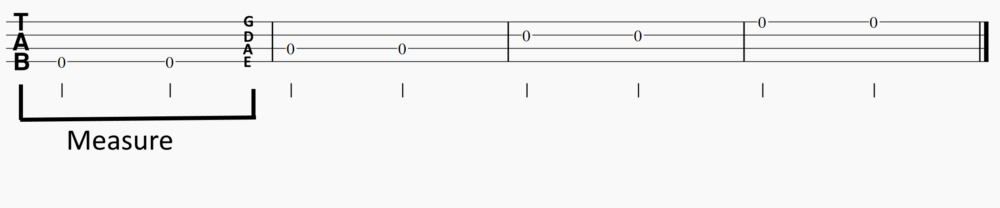

Before You Start Playing
Learn Tablature

An overview of the strings and their location

A POV view of the strings

How the frets are numbered
Tablature is an easy to read form of music notation. Each of the four horizontal lines in the tab represents a string - E A D G. The E string is the thickest, lowest sounding string. When playing, the E string will be the closest string to you. Tabs are broken up into measures, sort of like musical sentences. Each note in the measure is represented by a number which indicates which fret is played. The frets start from 0 which represents playing the open string.
Playing Posture
Sitting. Bass rests on right thigh, strap is sufficiently tight to offer support.
Standing. Strap should be adjusted so that the bass is around your mid torso.
You can play standing up or sitting down. In both stances, the bass should be comfortably placed at thigh/belly button level. When sitting, the bass rests on your right thigh (if you are right handed). You should adjust your strap so that the bass is not loose when sitting. Your left wrist should be kept as straight as possible to avoid overstraining and injuring yourself. Keep your shoulders relaxed and arms away from your body to avoid cramping.
How to Pick the Strings
Fingers are curled slightly, thumb resting on pickup

Pluck with tips of fingers, alternating index and middle fingers.
Use your index and middle fingers to alternate plucking the strings. Keep your fingers curled and relaxed. You can rest your thumb on the pickup when playing on the E string. You should move your thumb when playing on the other strings as described in the next section. When plucking, use only the tips of your fingers.
How to Fret
Press down on the fret, slightly above the fret
Keep your fingers curled and your thumb slightly curled as well. Keep your wrist's curvature slight, too much curving will cause pain and potentially injury. When fretting, push down on the fret, keeping your fingers curved. Press slightly "above" the fret, i.e. closer to the headstock of the bass.
Moving Your Thumb and Muting Strings

As you change strings, move your thumb with it and rest it on the string above
Rest your fingers on the strings you are not plucking in order to keep them from vibrating unnecessarily
The "floating thumb" technique consists of moving your thumb as you change strings. This allows you to mute the string, i.e. keep it from vibrating while you play on the other strings. Otherwise, your sound will be muddy and you will hear some ringing noises from the other strings. You should also be muting with your left hand by resting your fingers on the other strings while playing.